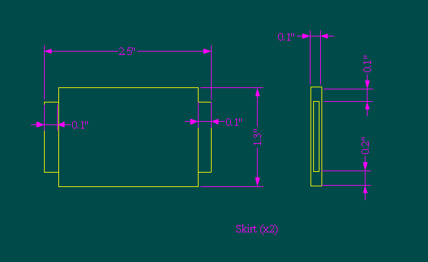

[This capability is not present in the current version of lignumCAD.]
Ultimately, you'll want to create drawings which look like this.

Note, especially, that 2.5” is not the dimension which we specified for the width of the skirt, but rather is the final dimension of the piece of stock which will be milled to form the skirt.